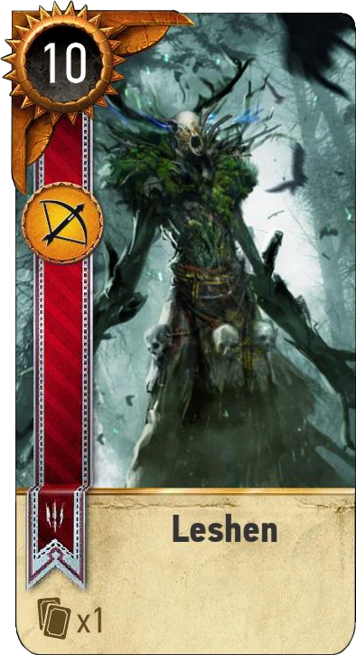

Leszy (dziad borowy)
Leszy jest skrajnie terytorialny, niezwykle cięzki do wytropienia i przebiegły.
Nie wiedzieć czemu, przez wielu chłopów uznawany za ducha lasu sprawującego opiekę.
W niektórych reginach nawet otaczane są swego rodzaju kultem.
Istnieje wiele legend o tym jak pomaga wioskowym myśliwym naganiając zwierzynę, nic bardziej mylnego.
Leszy w człowieku widzi tylko źródło energii, którą się żywi. Posaida zdonlość do polimorfii, najczęściej przyjmując postać
żbika lub wilka. Kontroluje żyjące na jego terenie zwierzęta i roślinność.
"I było to coś, co żyło tylko po to, by zabijać. Z głodu, dla przyjemności, powodowane czyjąć chorobliwą wolą, z innych przyczyn."
- Ostatnie życzenie, str.65
"W tym lesie lesie się nie poluje. Nigdy. Choćby wieś umierała z głodu" - Karta do Gwinta🃏
Taktyka
niektóre osobniki potrafią wznosić magiczne totemy, często chronione przez pobliskie zwierzęta, które czynią je silniejszymi. Często pod postacią zwierzęcia atakują ofiarę z zaskoczenia rozwrywając jej gardło. Leszy w starciu wykorzystuje nie tylko swoje okropnie długie szpony, ale i zwierzęcych sojuszników takich jak wilki i kruki które przeszkadzają atakującym go przeciwników.
występowanie
- puszcze
- bory
- niedostępne mateczniki leśne
- prastare lasy
Klasyfikacja
Relikty
Odporność
Żelazo